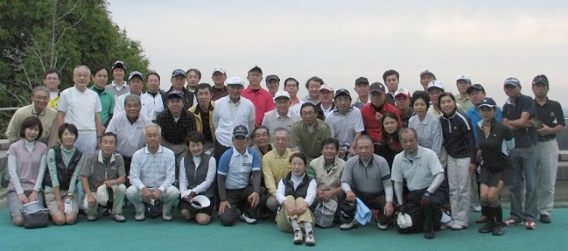

当日は曇天ながら雨もなく風もなく気温も20度くらいという、まさに秋のゴルフ日和の中、過去最大の12組48名（内初参加者５名）と盛大な会になりました。（集合写真を見ていただければと思いますが48名ともなると壮観です。）
優勝者はS33卒の木村栄二郎さん、グロス84、ネット70.8という堂々たる成績。
準優勝と栄えあるベスグロはS51卒の上原正照さん、グロス81、ネット71.4。昨年まで幹事でしたので遠慮しておられたのでしょうがここにきて実力炸裂！
3位はS42卒恵比須さん、惜しくも優勝、ベスグロとも今回は逃しましたが、過去2回連続ベスグロ、連続2位の実力はさすがというところです。
女性優勝はS50年卒和田邦子さん。
なんとレギュラーテイから打ってグロス93！
４８名平均でグロス96.33、ネット75.31ということで、結構レベルの高い大会になったことを報告いたします。
今年の春秋２回の大会はS42卒、S52卒、S62卒の皆さまにお願いいたしました。お疲れ様でした。
来年2回の幹事はS43卒、S53卒、S63卒の皆さまに幹事団をお願い致します。よろしくお願い致します。
尚、来春第34回大会は2011年5月22日（日）または5月29日（日）を予定しております。
